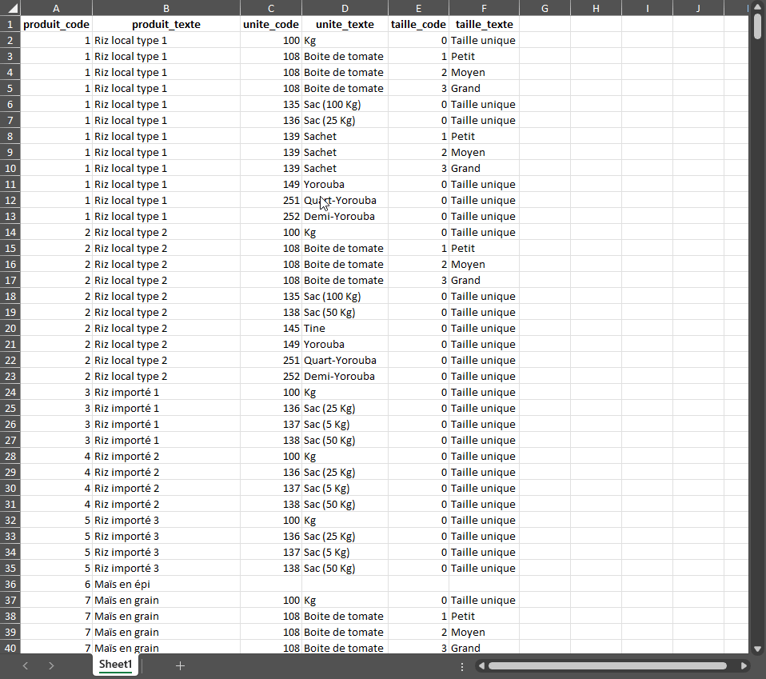

Créer un tableau aisément modifiable

Créer un tableau aisément modifiable
Parfaire le tableau
Créer un tableau aisément modifiable
Parfaire le tableau
Sauvegarder sous format SuSo
Tableau :
Vérifier le contenu :
Télécharger les anciens tableaux de l’EHCVM
Obtenir le questionnaire EHCVM en format JSON
Copier-coller le questionnaire Excel de l’EHCVM
Pour actualiser les tableaux, il faut les chercher dans le questionnaire de l’édition passée :
L’on devrait s’attendre à télécharger 11 fichiers.
Deux méthodes pour localiser ce fichier (i.e., document.json) :
Après obtention, sauvegarder dans 01_entrees/ehcvm2/
Comme le questionnaire CAPI peut ne pas être à jour, on exploitera la version Excel.
Pour ce faire :
xlsx, xlsm, ou xls dans le dossier 01_entrees/ehcvm3/.Rproj01_creer_tableau_excel.RSource pour lancer01_sorties/tableau_de_ref_ehcvm3.xlsx, une représentation aisément lisible et modifiable de la concaténation des tableaux de référenceunites_par_groupe_de_produits.html, une compilation des unités pour consulter et copier-coller lors de la prochaine phase de travail.Rproj02_creer_tableau_tab.RSource pour lancerproduit_code, unite_code, etc)